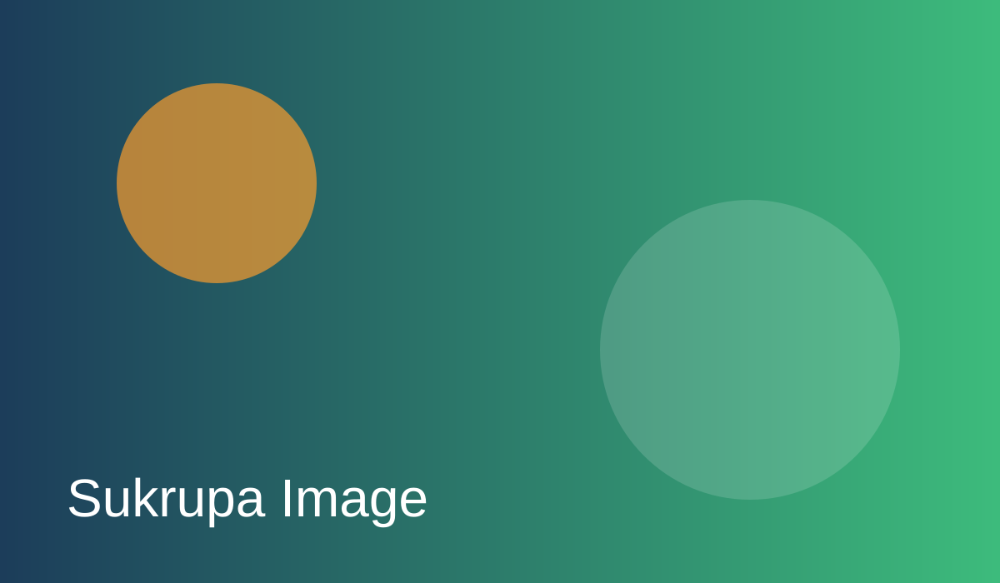

Our Story

Sukrupa began with a simple mission: support first-generation learners from marginalized families who face interruptions in education due to migration, poverty, and limited guidance. Over the years, our community-led programs have helped students stay in school, transition into college, and build meaningful careers.